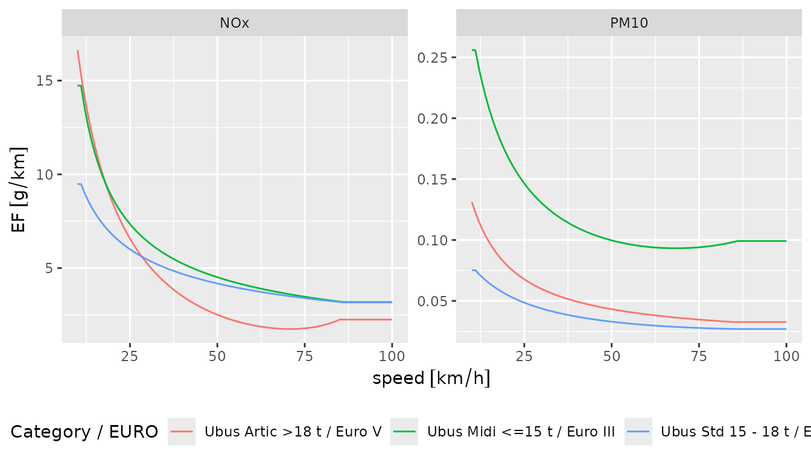
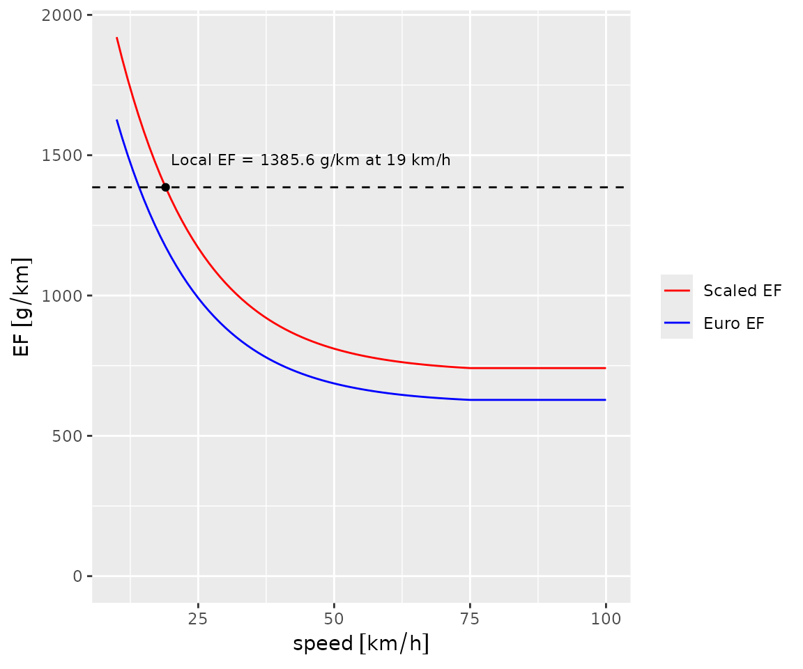

Exploring Emission Factors
2026-11-08
Source:vignettes/gtfs2emis_emission_factor.Rmd
gtfs2emis_emission_factor.RmdAn emission factor (EF) is the mass of a pollutant a vehicle emits
per kilometre travelled (g/km). It depends on the vehicle’s
characteristics (type, age, fuel, technology) and, in most models, on
its speed. Environmental agencies estimate these relations from local
measurements, and the choice of model can change emission estimates
considerably. This vignette shows how to explore the emission factors
available in gtfs2emis.
Available emission factor models
gtfs2emis includes hot-exhaust emission factors from
four environmental agencies. The links below lead to the agencies’
reports on how the factors were derived.
Hot-exhaust emissions
- Brazil, Environmental Company of São Paulo: CETESB
- United States, Environmental Protection Agency: MOVES3
- United States, California Air Resources Board: EMFAC2017
- Europe, European Environment Agency: EMEP/EEA
Wear emissions (tyre, brake and road wear)
- Europe, European Environment Agency: EMEP/EEA
Visualizing emission factor data
Emission factors depend on fleet characteristics (see the fleet
data vignette). In this section we use ef_europe_emep()
with three types of urban bus (Midi, Standard and Articulated) to show
how emission factors vary with vehicle type, speed and pollutant.
library(units)
library(gtfs2emis)
library(ggplot2)
ef_europe <- ef_europe_emep(speed = units::set_units(10:100, "km/h"),
veh_type = c("Ubus Midi <=15 t",
"Ubus Std 15 - 18 t",
"Ubus Artic >18 t"),
euro = c("III", "IV", "V"),
pollutant = c("PM10", "NOx"),
fuel = c("D", "D", "D"),
tech = c("-", "SCR", "SCR"),
as_list = TRUE)
names(ef_europe)
#> [1] "pollutant" "veh_type" "euro" "fuel" "tech" "process"
#> [7] "slope" "load" "speed" "EF"With as_list = TRUE, the function returns a
list with the emission factors and the inputs used to
compute them (see names(ef_europe) above).
emis_to_dt() turns it into a table, which is easier to
inspect and plot:
ef_europe_dt <- emis_to_dt(emi_list = ef_europe,
emi_vars = "EF",
veh_vars = c("veh_type", "euro", "fuel", "tech"),
pol_vars = "pollutant",
segment_vars = c("slope", "load", "speed"))
head(ef_europe_dt)
#> veh_type euro fuel tech pollutant EF process
#> <char> <char> <char> <char> <char> <units> <char>
#> 1: Ubus Midi <=15 t III D - PM10 0.2559070 [g/km] hot_exhaust
#> 2: Ubus Midi <=15 t III D - PM10 0.2559070 [g/km] hot_exhaust
#> 3: Ubus Midi <=15 t III D - PM10 0.2413421 [g/km] hot_exhaust
#> 4: Ubus Midi <=15 t III D - PM10 0.2285624 [g/km] hot_exhaust
#> 5: Ubus Midi <=15 t III D - PM10 0.2172637 [g/km] hot_exhaust
#> 6: Ubus Midi <=15 t III D - PM10 0.2072074 [g/km] hot_exhaust
#> slope load speed
#> <num> <num> <units>
#> 1: 0 0.5 10 [km/h]
#> 2: 0 0.5 11 [km/h]
#> 3: 0 0.5 12 [km/h]
#> 4: 0 0.5 13 [km/h]
#> 5: 0 0.5 14 [km/h]
#> 6: 0 0.5 15 [km/h]The plot below shows how the emission factors change with speed for
each vehicle type (veh_type) and Euro standard
(euro):
ef_europe_dt$name_fleet <- paste(ef_europe_dt$veh_type, "/ Euro", ef_europe_dt$euro)
# plot
ggplot(ef_europe_dt) +
geom_line(aes(x = speed, y = EF, color = name_fleet)) +
labs(color = "Category / EURO") +
facet_wrap(~pollutant, scales = "free") +
theme(legend.position = "bottom")
Sometimes the database has no emission factor for the exact
combination requested. In ef_europe_emep(), if the
technology (tech) is not available for a given vehicle
type, Euro standard and pollutant, the function uses an available
technology instead and prints a message saying which one. In the example
below, there is no CO2 factor for technology
"DPF+SCR". You can either accept the substitution or choose
a combination of veh_type, euro,
tech and pollutant that exists in the
database.
ef_europe_co2 <- ef_europe_emep(speed = units::set_units(10:100, "km/h"),
veh_type = "Ubus Std 15 - 18 t",
euro = "VI",
pollutant = "CO2",
tech = "DPF+SCR",
as_list = TRUE)
#> "CO2" emission factor not found for technology "DPF+SCR" and Euro "VI".
#> ℹ The package assumed 'SCR' Technology entry. Check `data(ef_europe_emep_db)`
#> for available data.The other EF functions, ef_usa_emfac(),
ef_usa_moves() and ef_brazil_cetesb(), work in
a similar way. See their documentation for details.
Scaling emission factors: making local factors speed-dependent
The MOVES3, EMEP/EEA and EMFAC2017 emission factors depend on speed.
The CETESB factors for Brazil (ef_brazil_cetesb()) do not.
With ef_scaled_euro(), you can scale a local emission
factor so that it varies with speed in the same way as the EMEP/EEA
factor:
where is the scaled emission factor at speed , is the local emission factor, and and are the EMEP/EEA emission factors at speed and at the average urban driving speed (19 km/h by default). With the default flat road and load of 0.5, the scaled factor equals the local one at .
To see this, we compare , and the reference in five steps:
- Build a fleet
data.framethat matches each vehicle in the local model to a vehicle in the European model
fleet_filepath <- system.file("extdata/bra_cur_fleet.txt", package = "gtfs2emis")
cur_fleet <- read.table(fleet_filepath, header = TRUE, sep = ",", nrows = 1)
cur_fleet
#> year euro shape_id type_name_br veh_type total fuel
#> 1 2006 III 1849 BUS_URBAN_D Ubus Std 15 - 18 t 2 D- Estimate local emission factors
cur_local_ef <- ef_brazil_cetesb(pollutant = "CO2",
veh_type = cur_fleet$type_name_br,
model_year = cur_fleet$year)
head(cur_local_ef)
#> $pollutant
#> [1] "CO2"
#>
#> $veh_type
#> [1] "BUS_URBAN_D"
#>
#> $model_year
#> [1] 2006
#>
#> $EF
#> Units: [g/km]
#> CO2_2006
#> [1,] 1385.626
#>
#> $process
#> [1] "hot_exhaust"
# convert local EF to data.frame
cur_local_ef_dt <- emis_to_dt(emi_list = cur_local_ef,
emi_vars = "EF")- Estimate the European emission factors with
ef_europe_emep()
# Euro EF
cur_euro_ef <- ef_europe_emep(speed = units::set_units(10:100, "km/h"),
veh_type = cur_fleet$veh_type,
euro = cur_fleet$euro,
pollutant = "CO2",
tech = "-")
# convert to data.frame
cur_euro_ef_dt <- emis_to_dt(emi_list = cur_euro_ef,
emi_vars = "EF",
veh_vars = c("veh_type", "euro", "fuel", "tech"),
segment_vars = "speed")
cur_euro_ef_dt$source <- "Euro EF"- Apply
ef_scaled_euro()
cur_scaled_ef <- ef_scaled_euro(ef_local = cur_local_ef$EF,
speed = units::set_units(10:100, "km/h"),
veh_type = cur_fleet$veh_type,
euro = cur_fleet$euro,
pollutant = "CO2",
tech = "-")
# convert to data.frame
cur_scaled_ef_dt <- emis_to_dt(emi_list = cur_scaled_ef,
emi_vars = "EF",
veh_vars = c("veh_type", "euro", "fuel", "tech"),
segment_vars = "speed")
cur_scaled_ef_dt$source <- "Scaled EF"- Plot the three emission factors
# rbind data
cur_ef <- rbind(cur_euro_ef_dt, cur_scaled_ef_dt)
cur_ef$source <- factor(cur_ef$source, levels = c("Scaled EF", "Euro EF"))
# plot
ggplot() +
# add scaled and Euro EF
geom_line(data = cur_ef,
aes(x = speed, y = EF, group = source, color = source)) +
# add local EF
geom_hline(aes(yintercept = cur_local_ef_dt$EF),
colour = "black", linetype = "dashed") +
geom_point(aes(x = units::set_units(19, "km/h"), y = cur_local_ef$EF)) +
# add local EF text
geom_text(aes(x = units::set_units(19, "km/h"), y = cur_local_ef_dt$EF),
label = sprintf("Local EF = %s g/km at 19 km/h", round(cur_local_ef_dt$EF, 1)),
hjust = 0, nudge_y = 100, nudge_x = 1,
size = 3, fontface = 1) +
# plot settings
scale_color_manual(values = c("red", "blue")) +
coord_cartesian(ylim = c(0, max(cur_scaled_ef_dt$EF))) +
labs(color = NULL)
The scaled EF equals the local EF (dashed line) at 19 km/h and follows the same speed curve as the Euro EF.
Emission factor databases in gtfs2emis
The hot-exhaust emission factor databases included in the package can be loaded with:
-
data(ef_brazil_cetesb_db)from Environmental Company of São Paulo, Brazil (CETESB) -
data(ef_usa_moves_db)from MOtor Vehicle Emission Simulator (MOVES) -
data(ef_usa_emfac_db)from California Air Resources Board (EMFAC Model) -
data(ef_europe_emep_db)from European Environment Agency (EMEP/EEA)
These data were downloaded from the agencies’ websites and software and pre-processed for the emission factor functions. The processing scripts are in the gtfs2emis GitHub repository.
Report a bug
If you have any suggestions or want to report an error, please visit the package GitHub page.